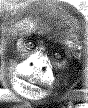

Excerpt of the book (written in spanish):
|
ABISEO : Patrimonio Mundial en Emergencia / by Adrián Mendoza Ocampo Second Edition: 1996; 116 p. Moyobamba - Perú Distribution and sale: Prof. Adrián Mendoza Ocampo |
The ecological importance of the National Park RIO ABISEO is based on its ecosystems: the Paramo de Loricaria, the High Andean grasslands (Puna), the great number of waters (lakes, lagunas, rivers, gorges), isolated spots of small woods, tropical cloud forests as well as typical highland forests.
About 22% of the area of the National Park is supposed to belong to Puna grasslands, 53% to mountain forests (half of this area presumably is cloud forest) and the rest of 25% to pre-montane forests.
The park is part of a particular geographic region which - according to some scientists - might be part of a refugium of the Pleistocene of the Huallaga River.

Actually the scientific explorations of the inner part of the National Park are restricted to the region of the Montecristo River in an altitude range between 2,000 and 4,200 m above sealevel.In this area of investigation could be determined 227 species of birds, 47 species of mammals, 27 species of anurans (tree frogs) and 4 species of reptils. This list also includes 17 species of vertebrates not yet specified scientifically: 10 frogs, 1 lizard, 6 rodents and one subspecies of bat.
Although the area of the National Park represents less than 0.2% of the Peruvian territory it houses many endemic species and other species whose distribution is restricted exclusively to this geographical region of Peru.
Spanish Name English Name Scientific Name
- Taruca Taruga, Andean deer Hippocamelus antisensis
- Oso de Anteojos Spectacled bear Tremarctos ornatus
- Mono Choro de Cola Yellow tailed wooley Lagothsix flavicauda
Amarilla monkey (Monkey of the
clouds)
- Jaguar u Otorongo Jaguar Panthera onca
- Maquisapa de Montaña Black spider monkey Ateles belzabuth
- Pato de Cabeza Castaña Species of ducks Netta erythrophthalma
- Cóndor Andina Andean condor Vultur gryphus
- Loro de Mejillas Doradas Yellow cheek parrot Laptositlaca branickil
- Rata Muca newly discovered Thornasomys apeco
species of Rat Opossum
- Tucaneta del Huallaga Toucanet (Small Aulacoshynchus huallague
Huallaga toucan)
- Carachupa Peluda Hairy armadillo Dasipus pelosus
- Sachavaca Brazilian tapir Tapirus terrestris
- Oso Hormiguero Gigante Giant anteater Myrmecophaga tridactyla
A total of 5,000 species of plants is supposed to be growing in the region of the Abiseo River. In the Andean highland part of the park there are wide grasslands and isolated spots of wooden forests. Below the altitude of 3,200 m approximately there are contiguous forests where wooden species with tree heights of 20 to 30 m are predominating.
The cloud forest which is covering the major part of the National Park contains the largest biodiversity of plants after the tropical rain forest. Especially in the Abiseo region there are included zones of endemism as well as zones of a refugium of the Huallaga Pleistocene.
Send email to schlebbe@informatik.uni-stuttgart.de (Heribert Schlebbe)